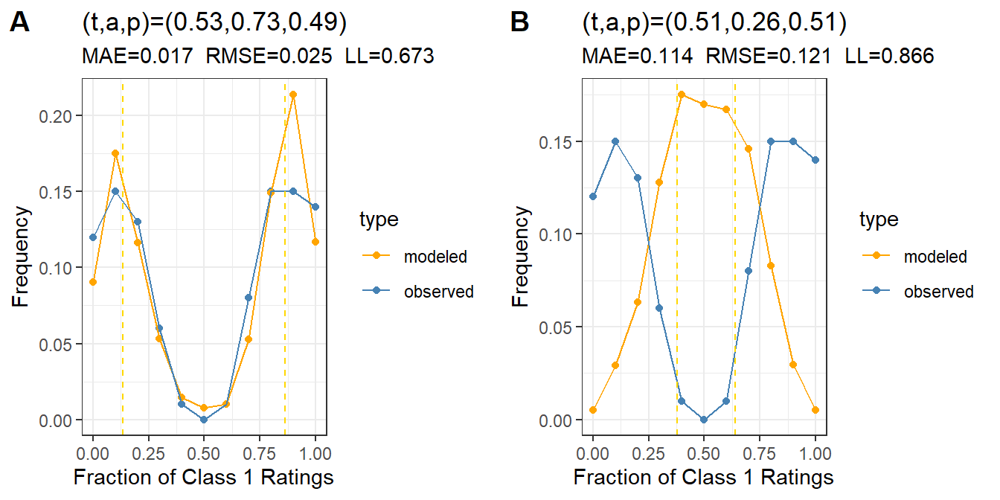

To assess the quality of a regression model, we often want to compare the original data to the model specification, which will tend to simplify the data in the direction of the model. The usefulness of the model depends on how well it represents the data in terms of our use cases. The best guide is experience in building models on data you understand. My main advice is not to think of goodness of fit tools as providing “truth,” but rather think of truth as a verb: make lots of models, until it becomes second nature to mentally compare the fit statistics to your use cases. In this way, the tools described in this chapter are like flashlights that let you see aspects of the data and its simplified form, and if you spend enough time looking, you’ll figure out how it’s useful. One way to gain experience is to simulate data sets with known properties, and then see if you can recover those properties.
The main measure of model fit is the likelihood, which we’re presenting as entropy measured in bits per rating. Within the same data set, we can compare models of different types, including different sorts of parameters, using this metric. This is one way to tell if the average t-a-p model with three parameters is “good enough” to describe a data set, or if we’d be better off with a hierarchical model.
Likelihood alone is not enough to give us confidence in a model. It’s necessary to lay eyes on the results, usually through a calibration plot, which is the subject of the first section below. The underlying question is whether or not the assumption of a latent truth variable can be supported by the evidence.
The sections below address some topics related to model fit. To see these in use, refer to the examples that show these tools applied to real data sets.
2 Units of Likelihood
The likelihood of a ratings set under the assumption of given parameters was derived in Chapter 5. In practice, we use the log (base 1/2) of the likelihood as a measure of model fit. This produces a number of bits, which are averaged over all ratings to get a comparable figure of the rating entropy. This is the figure reported out in the tapModel functions like tapModel::subject_calibration(). At the moment, the tapModel::fit_counts() estimation function uses binomial mixtures directly on the counts of Class 1 ratings, so its log likelihood cannot be interpreted in the same way the hierarchical log likelihood can. To directly compute the log likelihood for a hierarchical model, use tapModel::bits_per_rating(rating_params).
A simple form of the likelihood function is when the truth values are known. In practice, the probabilities \(t_i\) often closely approximate this situation. In that case we have
where the products are over all ratings assigned to subjects that are Class 1 or Class 0 (respectively) in truth. With many data sets, as an estimation algorithm converges toward values of \(t_i\) that are close to 0 or 1, the likelihood converges to this form. Using approximations of \(a_j \approx a\), \(p_j \approx p\), we can see that
From Equation 2, we can derive the cases when \(a=1\) and \(a=0\) that were discussed earlier.
Each rating of Class 1 by rater \(j\) contributes log likelihood in the form \(\log \pi_{1k_j}^{(j)}\). Recall that \(k_j\) is the assigned class (0 or 1) by that rater for that subject. It’s reasonable to average over these to create an measure of fit that’s comparable across hierarchical models. It gets more complicated with Bayesian models because of prior distributions on the parameters, but put that aside for now.
In the usual treatment, the log base is 2 or \(e\), in which case the log of any probability is between negative infinity (for very small probabilities) and zero (for probability of one). The reason for log base 2 is that we can think of \(-\log_2 p = \log_2 1/p\) as bits of information, thanks to Shannon’s entropy formula. I’ll take this a step further and use log base 1/2, so we don’t need the pesky negatives, which are only there because of the mathematicians’ habit of only using log bases greater than one.
Information in log-base-one-half equates a probability to fair coin flips. A probability of 1/8 is \(\log 1/8 = 3\) bits of information (since \(2^3 = 8\)), corresponding to eight possible outcomes starting with three heads (HHH) and proceeding through seven more variations like HTH to TTT. The information is that novelty is introduced into the world when we create the three classifications (heads or tails) based on random events. Non-random events don’t produce information. So if a coin has two heads, we’d always get HHH, so the probability of that single outcome is 1, and \(\log 1 = 0\) bits.
From the point of view of ratings, perfect accuracy doesn’t “give us information,” which sounds weird, so it’s more natural to substitute “entropy” (randomness) for “information.”
Note
I will use the convention that \(\log x\) means \(\log_{\frac{1}{2} } x\), without specifying the base each time. This reads oddly for those used to the usual log bases, since the log of any probability with base greater than one is negative. Hence there are a lot of expressions that start with negative signs in the usual likelihood formulations. The advantage of log base 1/2 is that we don’t need the negative signs to get a result in bits. Another important difference is that when we maximize likelihood, we minimize the number of informational bits per rating (again, because of the lack of a minus sign).
To get a sense of how this works, suppose all the raters have \(a_j = 1\), so all the ratings are accurate. Then the probability \(\pi\) of the assignment of any given rating is 1, since the rater is certain to get the right answer. In that case, \(\log \pi = 0\), so the log likelihood is zero bits per rating. On the other hand, if \(a_j = 0\) for all raters, then all the ratings are random assignment. Assume that \(p_j = p\) is the constant random assignment rate, so that \(\pi_{00} = \pi_{10} = \bar{p}\) and \(\pi_{01} = \pi_{11} = p\). In that case, the average log likelihood per rating is
where there are \(N\) ratings. If \(p = 1/2\) this is the entropy of flipping a coin, which is 1 bit per rating.
Using this convention, likelihood is maximized when accuracy is 100%, and the log likelihood is zero bits per rating. The worst case for any t-a-p model ratings set is when accuracy is 0%, and (with constant \(p\)) we get average bits per rating that depends on the value of \(t\) and \(p\). Because of convexity, this value attains a maximum when \(t = p = .5\), so the maximum number of bits per rating is \(s = \log .5 = 1\), the entropy from a coin flip. This line of thought shows us that maximizing likelihood is minimizing model randomness, which we’ll call entropy. Minimizing entropy is minimizing randomness left over in the ratings model, rather like a least squares regression minimizes residuals (the part we can’t explain with the model).
The log likelihood in bits per rating can be estimated using tapModel::bits_per_rating(rater_params) as shown below.
Show the code
xlogx <-function(x){if_else(x ==0, 0, -x*log(x)/log(2))}set.seed(12345)output <-expand.grid(t =c(.1, .5), a =seq(0,1,.05), p =c(.1, .5), LL =NA)for(i in1:nrow(output)){ params =list(t = output$t[i], a = output$a[i], p =output$p[i])# simulate data ratings <-generate_sample_ratings(N_s =1000, params = params, details =TRUE)# use the average t-a-p params used to generate the data as heirarchical # values for raters, and estimate from that the t_i values for each # subject. rating_params <- ratings |>as_rating_params(params) |>estimate_ti()# store results output$LL[i] <-bits_per_rating(rating_params) output$LL_approx[i] <-expected_bits_per_rating(params)}output %>%gather(type, value, LL, LL_approx) %>%mutate(tp =str_c("t=", t, " p=", p),type =recode(type, LL ="Empirical",LL_approx ="Expected"), # nice legend labelstype =factor(type, levels =c("Empirical", "Expected")) ) %>%ggplot(aes(x = a, y = value, color = tp, group =interaction(tp, type),linetype = type)) +geom_line() +theme_bw() +ylab("Bits per rating")
Figure 1: Log likelihood in bits per rating for a variety of parameters, with 1000 samples. The dotted lines are the expected values and the solid lines are the empirical ones, which have sampling noise.
The overplotted purple and green lines in Figure 1 illustrate that the entropy (bits per rating) doesn’t depend on \(t\) if \(p = 1/2\). We also see that as \(a\) approaches one, the entropy approaches zero. However, the case \(t = .5\) and \(p=.1\) shows that decreasing entropy (i.e. maximizing likelihood) is not always the same thing as maximizing accuracy \(a\). In that case, as ratings become inaccurate, 90% of them tend toward Class 0, which reduces entropy to an expected value of \((.1)\log(.1) + (.9)\log(.9)=\) 0.47 bits per rating, per Equation 3. Note that neither the formulas nor plots for entropy at \(a=0\) depend on \(t\); the true class only matters if accuracy is positive.
I found it surprising how large entropy is when all the parameters are .5 (\(s = .81\) bits per rating). If we disaggregate the contributions for each of the four cases, the conditions where the rating matches the true value (from \(\pi_{00}\) and \(\pi_{11}\)) contribute .5 to the entropy. This is because half of the correct answers are due to coin flips (Gettier-like conditions). The wrong answers (from \(\pi_{10}\) and \(\pi_{01}\)) contribute another .31 bits per rating of entropy. It’s probably better, however, to think of the entropy as a mixture of two sources, corresponding to Class 0 and Class 1, with \(t\) as the mixing parameter. This idea leads to the need to incorporate the class-specific parameters, e.g. \(a_0, a_1\) into both the E-M solver and the log likelihood calculations. I have not done that yet, however. See the wine judging example for more development of the idea.
Note
If we use average parameters as produced by fit_counts() to estimate empirical bits per rating, we first apply the E-step of the E-M algorithm, which estimates the individual \(t_i\) probabilities. There’s a convenience function to do this for you: bits_per_count(counts, params). If you want the expected entropy instead, the function expected_bits_per_rating(params) will do it. For large sample sizes, these should give similar results.
What if we want to compare the entropy (hence likelihood) of ratings from the same source, but that have different estimated values of \(t\)? Since the proportion of true Class 1 cases could vary by sample, it would be convenient to factor that out when comparing the other parameters. We could do this by artificially setting \(t=.5\) in the parameters and leaving \(a\) and \(p\) alone. There’s a convenience function for this called rater_entropy(params) but I’d consider this experimental. Another approach might be to sub-sample ratings to balance the Class 1 cases, but this is awkward and subject to all kinds of problems.
3 Model Calibration
Calibration means that a model can reproduce the basic distributional properties of the data. The most basic comparison we can make between a ratings set and its model is to look at the distribution of Class 1 ratings by subject. The tapModel package has a function to do this, subject_calibration(), which takes a data set and a set of model parameters and produces a comparative plot of the distribution of Class 1 ratings for the original data set and the simulated data sets from the model. This is a good first step to see if the model is reasonable.
The set up here is that we have 300 subjects and 25 raters each, with randomly-generated rater parameters that average 1/2, with \(t = .1\) fixed.
Figure 2: Distribution of Class 1 ratings over subjects, showing the density of Class 1 ratings for the original data set containing noise (blue) and the model with true parameters (orange). Plot A is the average t-a-p model and plot B is the hierarchical version.
The plots in Figure 2 show that both the average (A) and hierarchical models (B) do a good job of reproducing the distribution of Class 1 ratings across cases. There are two evident modes (bumps where the density piles up). The left one is larger, because \(t= .1\) means that there are few Class 1 cases to be detected, so there are more false positives than true positives. The mode on the right is the true positives. The dashed vertical lines denote where the model parameters say these modes should be on average.
Notice that although the error measures MAE (mean absolute error) and RMSE (root mean squared error) are the same for both models, the log likelihood is smaller (better) for the hierarchical model. This is what we’d expect, since adding parameters to a model will generally improve it.
In addition to comparing the distributions of Class 1 ratings over subjects, we can use raters as the basis for comparisons, to assess whether the modeled rate of Class 1 ratings per rater matches the empirical assignments.
Figure 3: Distribution of Class 1 ratings for a simulated data set, showing the cumulative distribution of Class 1 ratings for the noisy data (blue) and the model with estimated average t-a-p parameters (orange).
The rater calibration plot in Figure 3 shows the main difference in the models. The average model (A) doesn’t distinguish between raters, so the predicted rate of Class 1 assignments is the same for each. For the hierarchical (B) plot, the rates are perfect.
A t-a-p model produces a predicted Class 1 probability for each rating, which we can compare to the empirical distribution of ratings. To do this, we calculate \(Pr(\text{Class 1 rating}; t_i, a_j, p_j) = c_{ij}\) for each rating, put these into bins and calculate the average number of actual Class 1 ratings for each bin.
Figure 4: Distribution of Class 1 ratings for a simulated data set, showing the cumulative distribution of Class 1 ratings for the noisy data (blue) and the model with estimated average t-a-p parameters (orange).
We can again see the hierarchical fitting in Figure 4, with (A) showing constant modeled values of \(c_{ij}\), since all the parameters are the same for each rating, versus the individually fitted parameters that result in (B).
We might conclude from the calibration plots that both models give useful information, but if we are seeking information about the individual raters or subjects, the hierarchical model is perfectly usable for that purpose.
4 Estimating Parameter Error
The tapModel library includes a function to assess the estimation error of parameters. It does this by using the parameters to simulate ratings sets, solving those and comparing the results. The resulting variation in parameters will include sampling error, so the margins will be wider for smaller data sets. The code below illustrates.
Figure 5: Approximate estimation error for the a_j parameters. The red markers are the original parameter estimates, and the boxplots show the range of parameters generated from simulated data sets.
A similar plot to Figure 5 is also provided for the \(p_j\) parameters. Other functions for assessing model fit can be found in Chapter 6.
We can also use MCMC methods to generate densities of likely parameter values.
Figure 6: MCMC draw densities for the first three accuracy parameters.
The densities from the MCMC draws, like those in Figure 6 can be used to create credible intervals for inferance and to look for multi-modality. See Chapter 4’s disussion of the Kappa Paradox for a good example of the latter. The fitted model that’s returned from the fitting function can also be used with the interactive Shiny app shinystan and other tools, such as the stan playground from the Flatiron Institute.
5 Model Exaggeration
There is a particular issue worth mentioning with smaller data sets, particularly those with few raters per subject. There are cases where we can increase the likelihood of the model while degrading its performance. Recall the likelihood function for the hierarchical t-a-p model, which assigns parameters to each subject and rater. For a single subject, its form is
\[
Pr[\text{data|params}] = t_i\pi_1+\bar{t}_i \pi_0,
\] where the \(\pi_1\) factor is the product of all the rater probabilities assuming the true class is 1. Assume that the \(\pi\)s are not equal, e.g. \(pi_1 > pi_0\). Then we can maximize the probability (likelihood) by setting \(t_i = 1\) and therefore \(\bar{t}_i = 0\). Given any proposed set of hierarchical parameters, we can always increase the likelihood by rounding the estimated \(t_i\) values to 0 or 1. This is a kind of model exaggeration, because it hides the actual uncertainty.
This exaggeration can cause a seeming paradox, where the likelihood increases as the modeled distribution diverges from the empirical one. If the data fits the model, this may not be noticeable, but the presence of noise will cause the “rounding” operation to make more mis-classifications, so the model is more confident about the wrong answer. A sign of this is when model registration gets worse with the hierarchical parameters. Registration here means the match between the distribution of Class 1 ratings per subject in the data set versus the model’s predictions.
If we allow the \(t_i\) parameters to tend too much toward their \([0,1]\) limits, the model is more sensitive to error. In this example, it’s sampling error. With only three raters, it’s not a good assumption that a probability less than one half should be rounded to zero, etc. Other kinds of model error could have a similar effect. In the extreme case where all the \(t_i\) parameters are 0 or 1, we’re truncating the likelihood function as shown below.
Show the code
#' Illustrate a t-a-p binomial mixture distribution of Class 1 Countsa <- .4p <- .4pr_c0 <- (1-a)*p pr_c1 <- a + pr_c0distr <-data.frame(N_c =0:10) |>rowwise() |>mutate(C0 =dbinom(N_c, 10, pr_c0),C1 =dbinom(N_c, 10, pr_c1),# apply the cut point C0_cut =if_else(C0 > C1, C0 + C1, NA),C1_cut =if_else(C1 > C0, C0 + C1, NA)) |>gather(Class, Probability, -N_c) |>separate(Class, into =c("Class","Type"), sep ="_") |>replace_na(list(Type ="original"))distr |>ggplot(aes(x = N_c, y = Probability, color = Class, linetype = Type)) +geom_point() +geom_line() +theme_bw() +scale_x_continuous(breaks =0:10) +xlab("Number of Class 1 Ratings out of 10")
Figure 7: Sample distribution of Class 1 ratings counts, with \(a = .4\) and \(p=.4\) after a cut point is applied at 4.
The distributions in Figure 7 show the distorting effect of applying a cut point at four ratings of Class 1 with \(a = p = .4\). The original distributions are shown in the dashed lines, and the cut point distributions are shown in the solid lines. The cut point process biases the likelihood function due to the truncation where the two binomial distributions overlap.
Model exaggeration won’t usually be a problem when there are many raters, because the \(t_i\) values will be close to zero or one with high confidence anyway.
6 Adversarial Raters
Not every data set will fit the t-a-p assumptions. In that case, we’d expect to see divergence between observed and modeled data even after fitting the data with average or hierachical parameters. One such case is when we have non-independent ratings. Another case is if some raters are adversarial, meaning that they report exactly inaccurately, inverting the rating for what would normally be accurate ratings.
Show the code
set.seed(123)n_subjects <-300n_raters <-20N <- n_raters*n_subjectsratings <- tapModel::generate_sample_ratings(N_s =100, N_r =10, params =list(t = .5, a = .7, p = .5),details =TRUE) bad_ratings <- ratings |># flip accurate ratings for the first ten ratersmutate(rating =if_else(rater_id <=3& A_ij ==1, 1- rating, rating)) # get counts and find the average paramsavg_params <- ratings |>as_counts() |>fit_counts()bad_params <- bad_ratings |>as_counts() |>fit_counts()# plot the computed average modelp1 <- ratings |>as_rating_params(avg_params) |>subject_calibration()p2 <- ratings |>as_rating_params(bad_params) |>subject_calibration()cowplot::plot_grid(p1, p2, labels =c("A","B"))

Figure 8: Distribution of Class 1 ratings for a simulated data set, showing the subject calibration for the original data set (A) and one with three adversarial raters (B).
The B plot in Figure 8 shows that the model can’t capture the actual distribution of ratings when three out of ten raters invert their ratings. There are two signs that something is wrong. First the entropy is very high in the second plot, and second the modeled density doesn’t look anything like the observed one; the error measures are an order of magnitude worse.
In such cases, we might want to try to identify adversarial raters to “fix” the data by filtering out the bad actors.
Even if we switch to a heirarchical model, it doesn’t completely solve the problem. Adversarial raters are not considered in the basic t-a-p model, so the assumption about the behavior of accurate raters fails. However, we can estimate the accuracy of each rater and use that to filter them. The resulting calibration plot is show in Figure 9.
Figure 9: An attempt to eliminate bad raters by filtering on accuracy.
The average parameters in Figure 9 are pretty close to the values used to generate the original data set, and the calibration plot looks okay. Obviously, we’d want to dig into the details more deeply for an actual study. Which raters were eliminated, and what evidence is there that they are rating backwards?
7 Independence
Imagine that you’ve been asked to assess the reliability of portfolio ratings done by an assessment committee. Three committee members independently review each student’s portfolio of work and rate is as pass (Class 1) or fail (Class 0). Unknown to you, the program director has added a forth column to the data, which appears as a fourth rater, but actually represents the majority vote. You’re not aware of this dependent artificial “rater” and proceed as if it’s another independent vote.
Show the code
set.seed(123)ratings <- tapModel::generate_sample_ratings(N_s =100, N_r =3, params =list(t = .8, a = .3, p = .8)) bad_ratings <- ratings |># create a majority vote columnspread(rater_id, rating) |>mutate(`4`=as.integer(`1`+`2`+`3`>1)) |>gather(rater_id, rating, -subject_id)# get counts and find the average paramsavg_params <- ratings |>as_counts() |>fit_counts()bad_params <- bad_ratings |>as_counts() |>fit_counts()# plot the computed average modelp1 <- ratings |>as_rating_params(avg_params) |>subject_calibration()p2 <- ratings |>as_rating_params(bad_params) |>subject_calibration()cowplot::plot_grid(p1, p2, labels =c("A","B"))
Figure 10: Distribution of Class 1 ratings for a simulated data set, showing the subject calibration for the original data set (A) and one with a non-independent rater (B).
The plots in Figure 10 contrast the model fit without the dependent data (A) and with it (B), showing a poor subject calibration for the latter. This is good! Dependent raters violate the model assumptions, and we’d hope that the model would not fit in such cases.
We can attempt to detect non-independence using a correlation matrix among raters.
Show the code
bad_ratings |>spread(rater_id, rating) |>select(-subject_id) |>cor() |>kable(digits =2) |>kable_styling(full_width =FALSE, # <- stops spanning the full pageposition ="center",bootstrap_options =c("striped","hover","condensed") )
Table 1: Correlation matrix among raters per subject.
1
2
3
4
1.00
0.06
0.13
0.55
0.06
1.00
0.00
0.34
0.13
0.00
1.00
0.50
0.55
0.34
0.50
1.00
Notice that the correlations for rater 4 in Table 1 are all larger than the rest. This test isn’t definitive, but it gives us a reason to look into rater 4, at which point we would likely discover the problem.
The correlation is problematic when raters have no variation in their ratings. A more general approach is to use the covariance of ratings between raters. See the formula for correlation between raters, found in the Appendix for how to proceed. Given two raters, we’ll compute the centered dot product of their ratings as the empirical covariance, and use the formula is \(a_1a_2 t \bar{t}\) as the expected value. This is done in the tapModel::rater_cov() function. Using that idea, we can find the difference between expected and actual values by rater pair.
For larger numbers of raters, we can benchmark the expected range of covariance differences by using simulated data with the rater_cov_quantile() function. This is illustrated with another problem we might encounter: duplicated raters, where the ratings are identical or nearly so.
Show the code
set.seed(123)ratings <- tapModel::generate_sample_ratings(N_s =200, N_r =90, params =list(t = .5, a = .5, p = .5)) dupe_ratings <- ratings |>filter(rater_id <=10) |>mutate(rater_id = rater_id +90)bad_ratings <-rbind(ratings, dupe_ratings)# find the model bad_params <- bad_ratings |>as_counts() |>fit_counts()# create the expanded data rating_params <- bad_ratings |>as_rating_params(bad_params)# range of expected correlationsrange <-rater_cov_quantile(rating_params)# expected and actual correlationscov_results <- rating_params |>rater_cov(max_raters =200)plot_rater_cov(cov_results, range)
Figure 11: Distribution covariances between raters, with 96% confidence interval marked. Ten duplicate raters have been added to show non-independence.
Notice the blip to the far right of Figure 11 that shows the ten duplicated raters. These are far outside the expected range, and deserving of our attention.
8 The Dunning-Kruger Threshold
As a reference point for interpreting coefficients, it can be useful to compute the Dunning-Kruger threshold for the parameters. Recall that this horizon is the largest plausible result for accuracy that can be obtained when accuracy is actually zero. Suppose we have 25 subjects that are each rated by 2 raters, a pretty small data set. Assuming that \(t = p = .5\), we can estimate accuracy values from simulated data sets and compare to known values.
This computation is limited in that is assumes ratings are unbiased (i.e. \(t = p\)). However, it may still be useful as a sanity check. See the discussion of Dunning-Kruger in Chapter 2 for more. If you want more detail, there’s a function to simulate accuracy sampling error called tapModel::simulate_exact_fit()`. An example is found in Figure 12 showing results for 50 subjects with two raters each.
Figure 12: Ranges of accuracy estimates for simulated rating sets with t = p = .5 samples. The red markers indicate the mean for each estimated value of accuracy.
As accuracy approaches zero, more and more of the sampling error must be larger than the true value, so the average result is biased upwards. A more useful direct calculation with tapModel::dk_horizon() gives the bootstrapped probabilities for the “DK horizon”. These appear in Table 2.
Table 2: Estimated percentiles for accuracy, given 600 subjects with ten raters each, when accuracy is actually zero.
Threshold
Accuracy
50%
0.08
75%
0.34
90%
0.45
95%
0.55
98%
0.58
For a data set of this size, 98% of the randomly generated ratings resulted in an accuracy parameter estimate of .53 or less. It’s reasonable to be suspicious of parameter estimates that have \(a\) below that threshold. We might be being fooled by sampling error into thinking the raters are much more accurate than they actually are.
9 A Validation Process for Binary Ratings
The following steps may help you think through the analysis of binary t-a-p models.
Check Assumptions. Validity testing begins with assumptions about the data-gathering process, so it’s essential to seek expertise with the data type to avoid personal errors. If you didn’t generate the data, talk to whoever did. Ask questions that will build confidence that the encodings are valid, the data format reflects your understanding, and the statistical assumptions. In the formal t-a-p model, the most important assumption to check is the independence of raters. If a group of faculty who are scoring student writing portfolios are sitting around a table discussing the essays, the ratings are not independent. Optionally, use prior experience or literature to write down your expectations for \(t\) and \(a\). This is so that your ‘surprise factor’ doesn’t get biased by seeing the results first.
Compute the three-parameter t-a-p solution with params = fit_counts(as_counts(ratings)) and inspect for reasonableness (given your priors) and degeneracy (any coefficient of zero or one).
Compute the Dunning-Kruger horizon for your data configuration using the number of subjects as \(N_s\) and average raters per subject as \(N_r\). This gives a value for accuracy, below which any estimate is suspect. Suppose the DK number comes back as .3, using a 98% threshold, and the accuracy estimate for your data is .25. We should double-check the validity of the data.
2.1 If the estimated accuracy is below the DK horizon, fit the model using the MCMC method and inspect the distribution of posterior samples for accuracy. Look for a reasonable range of values that represents uncertainty. If this includes values that are unacceptable, then you may not be able to proceed further. It’s an indication that you need more samples or more reliable ratings or more raters, in some combination. You can simulate these combinations as a kind of power test.
Use the t-a-p parameters to estimate the \(t_i\) truth probabilities and rater \(a_j\) and \(p_j\) parameters using rating_params = fit_ratings(ratings) and compare the model fit for this hierarchical model to the three-parameter version using the calibration plots. We’re looking for two things here. One is whether the hierarchical model has better fit (fewer bits/rating) than the average model. If not, we should probably stick with the three-parameter model to avoid overfitting. The second thing to inspect is overall match between modeled and observed ratings, using the error statistics provided on the calibration plots. See the example above on adversarial raters for an obvious misfit.
If the model is not well-calibrated, check the independence assumption using rater_cor() and rater_cor_quantile().
Use the rating_params, which have all the hierarchical coefficients, to generate new sample ratings and then see if the solver can properly estimate those coefficients. You can generate boxplots for accuracy with estimate_rater_parameter_error(rating_params)$plot_a. This gives us an idea of how much the sampling error combined with estimation error affect the estimates. Alternatively, you can get more detailed reports using the MCMC solver fit_ratings_mcmc(). The shinystan package has interactive tools for detailed analysis.
This process isn’t intended to produce a single statistic that tells us if the model is “good” or not. Rather, it’s intended to be a work flow that allows an analyst to develop an intuition about the data and models to aid in judgments about applications of the ratings. At all points, it’s necessary to apply judgment to test the results for reasonableness with respect to the subjects, raters, and rating processes that produced the data.